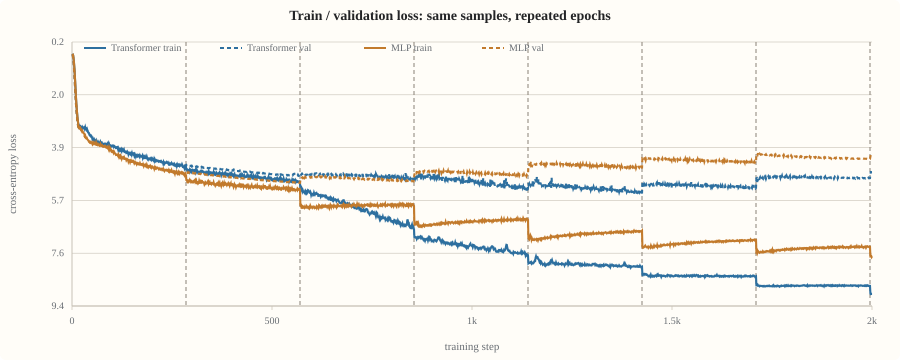
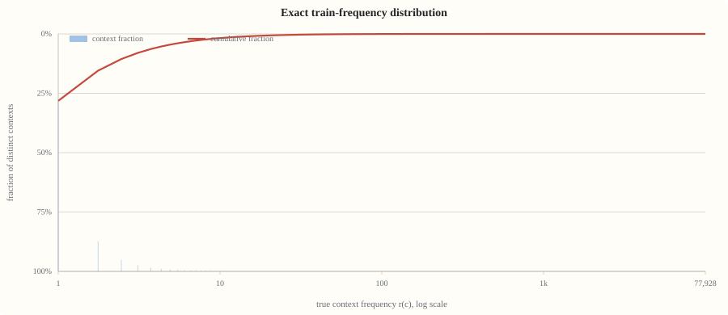
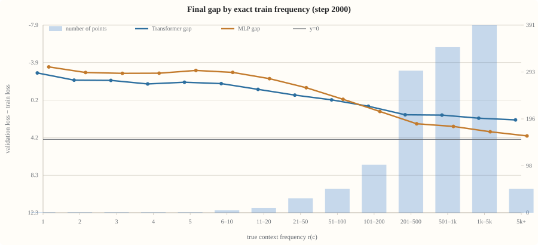

n-gram Gap：最小复现与机制证据
只问一个问题：在 vanilla nanoGPT 中，仅加入可训练的 bigram / trigram value memory，是否足以让固定顺序 replay 产生 train/val gap？这里把 setting、曲线和频率证据放在主线；术语、伪代码、debug 过程和历史分支放到背景页。
版本说明：本页保留早期 injection-point ablation 作为历史对照，并在下方合并新的 collision-free exact-frequency baseline。旧版完整分析（含 current-shell、exp4/exp5、toy、P1/P2）仍保留在 index_archive_20260805.html；背景与 debug 子文档解释这些概念为何不属于最小 setting。
是的。n-gram table 在训练集上逐渐记住 context-specific value；固定顺序多 epoch replay 后，train loss 继续下降，而 val loss 在 epoch 边界后上升，形成 gap。
不把 current shell、Muon、RoPE 或复杂观测系统当作必要条件。用同一份 vanilla 模型，只改变 n-gram 的注入点，观察 gap 强弱是否随信号到达输出的方式变化。
1. 最小 setting
标准主线是 baseline_input。它对应最朴素的 over-encoding：先查 n-gram value，再加到 token embedding，后面运行普通 Transformer。
训练 shard 约 226 steps / epoch（含 freq eval 消耗的 train batches；虚线为数据自动标注的 epoch 边界：230, 460, 680, 910, 1130, 1360, 1580, 1810）。validation 与 freq-bin eval 均每 10 步一次。三种注入点仅用于消融，不是三个不同的模型家族。
2. 核心结果：注入点改变 gap 强度
同一个 n-gram table 放在不同位置，得到不同的信号路径。y 直接绕过 attention 到达 residual stream；input 在最开始加入 embedding；v 则先进入 attention 的 value，再被权重混合。
n-gram 信号在 attention 之后加入，每层都能直接影响后续输出。
查表结果一次加到 wte；这是后续实验默认采用的最朴素 setting。
value residual 会被 attention 混合，且当前 norm 只有 V 的约 6.5%。
3. 训练曲线：epoch replay 后 train / val 分叉
4. Table norm × gap
table 的参数 RMS 是一个直接的 memory growth 指标。它帮助确认 n-gram 确实在被写入，但不能单独决定 gap 的大小：y 的 gap 最大，并不意味着它的 table RMS 增长最快。
| step | v gap | y gap | input gap | v table RMS | y table RMS | input table RMS |
|---|
5a. 历史频率分解视图
我们用训练集中的真实 token context统计 hit count，再把 train / val token 按频率分桶。每个 bucket 都保留 token count、token fraction、平均 token loss 和总贡献（fraction × loss）。novel（train hit count = 0）保留在 raw 统计和直方图中，但不画 gap：train 中没有对应 token loss，无法定义同桶的 train/val 差值。
5b. 频率分解：gap 从哪些 context 来？
这组图保留早期主线中的 hit-count 分桶与交互视图。新的 exact-frequency 定义、2000-step baseline、最终 gap 和完整训练曲线已在下一节作为当前主结果重新合并。
6. Exact-frequency baseline：主结果
这里合并 collision-free exact trigram baseline。r(c) 只来自完整 train epoch 的真实 context count；hash bucket occupancy 不参与频率或 gap 定义。最终 gap 按 step 2000 的 train / validation per-frequency loss 计算，训练曲线也来自同一个 run。
7. 受控样本量复播：Transformer 与 MLP trunk 对照
这是同一条 real-text trigram controlled baseline 的样本量重采样和 trunk 对照，不是新的频率定义。完整 upstream train/val block 流先按整行均匀下采样，使一个 epoch 固定为 285 steps；随后只改变 n-gram 表之后的 backbone。



| 真实频率 bin | 有效点数 | Transformer gap | MLP gap |
|---|---|---|---|
| 1 | 1 | 7.17 | 7.82 |
| 6–10 | 5 | 6.02 | 7.23 |
| 11–20 | 10 | 5.40 | 6.55 |
| 21–50 | 30 | 4.78 | 5.57 |
| 51–100 | 50 | 4.26 | 4.32 |
| 101–200 | 100 | 3.58 | 3.01 |
| 201–500 | 296 | 2.66 | 1.68 |
| 501–1k | 345 | 2.62 | 1.40 |
| 1k–5k | 391 | 2.29 | 0.82 |
| 5k+ | 50 | 2.10 | 0.37 |
8. 结论
- 最小充分条件：vanilla nanoGPT + bigram / trigram value table + fixed-order multi-epoch replay + 能到达输出的注入方式。
- 默认 setting：input / wte 注入。它简单、可解释，也最接近 over-encoding 这类 n-gram memory 用法。
- 注入点是强度变量，不是 gap 的来源变量：v、y、input 都能产生不同程度的现象；差别来自信号路径和尺度。
- 低频结构解释现象：table 在重复看到的 train context 上形成强烈的 train-specific value，而 novel / 低频 context 在 val 上暴露出这种记忆的局限。
背景、术语与 debug
展开背景说明（已拆到子文档）
如果你需要理解 gate、V / y / input 的伪代码、current shell 为什么是实验分支而不是必要变量，或早期 hash-row 频率统计为什么会把 novel trigram 错判成 seen，请阅读：
展开历史实验记录与旧版完整页面
Agent experiment log保留了旧实验的逐项记录；旧版完整 guide保留了历史章节与原始图表。